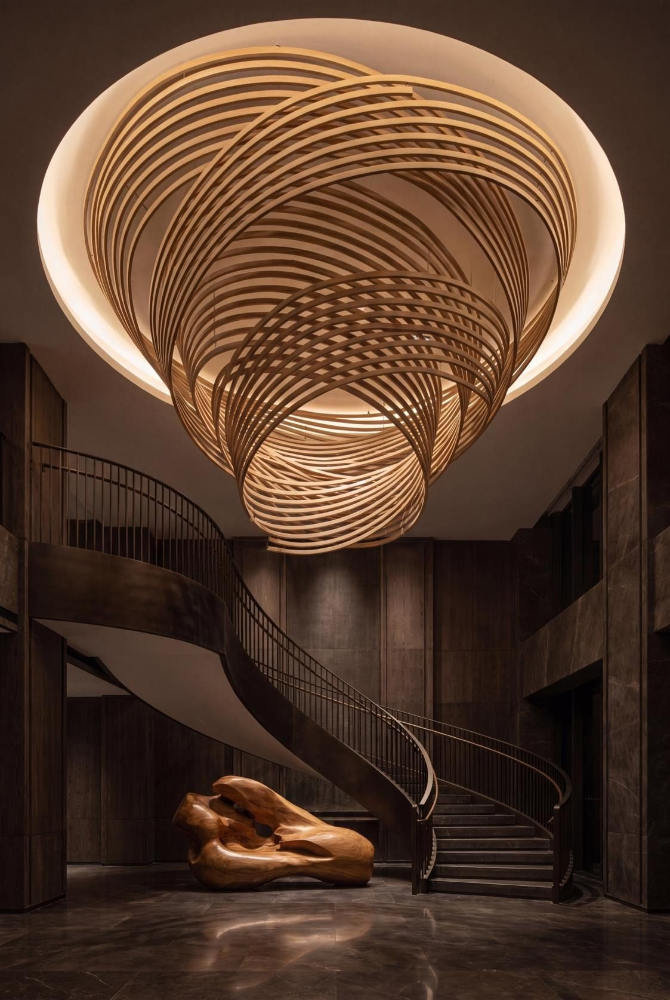
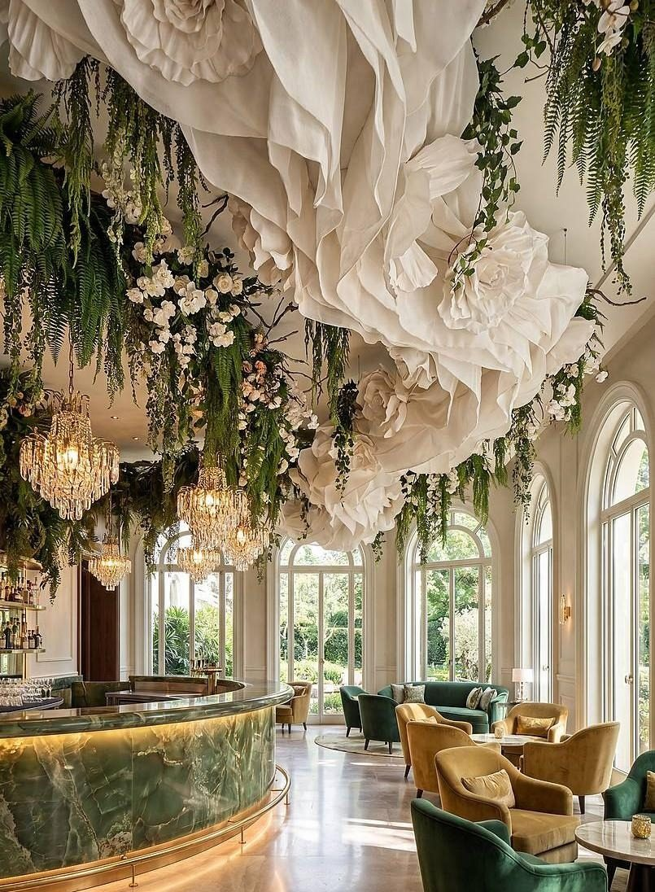

We spend our lives beneath ceilings and rarely look at them. That is exactly why a designed ceiling is so powerful — it works on people before they know why.
There are four walls in every room and a fifth that almost no one designs. Lift your eyes in most luxury interiors and you will find a flat, lit blank — the single largest uninterrupted surface in the space, left to say nothing at all.
We treat the ceiling as the most strategic plane in the room. Handled with intent, it sets the scale of a lobby, draws the eye through a restaurant, and gives a private residence a sense of sky.
A designed ceiling does something no wall can: it is seen from everywhere at once, by everyone, without obstruction. That makes it the most efficient way to give a space identity. A sculptural ceiling can compress a soaring atrium into intimacy, or lift a low room into grandeur, purely through form and shadow.
Our ceilings are built from metal worked like fabric — folded, woven, flowed and suspended — then married to concealed light so the surface appears to breathe. The interplay of finish and patina against grazing light is what gives the plane its depth; from one angle it reads as solid, from another as liquid.

A ceiling is unforgiving — every junction is on permanent display, overhead, under raking light. We resolve the substructure, the services and the access long before the visible work begins, so the finished plane reads as one continuous, seamless gesture. The engineering is invisible; that is the point.
The ceiling is the one surface a person studies while they wait — make it worth the wait.
Done well, a ceiling becomes the thing a place is remembered by. Pair it with a bespoke chandelier and the two become a single composition — sculpture above, light within. Explore the idea further in our completed installations.
— The Atelier, The Stellar Kraft
From flowing metal canopies to backlit sculptural planes, we engineer ceilings that transform the volume beneath them.
Begin a Commission →